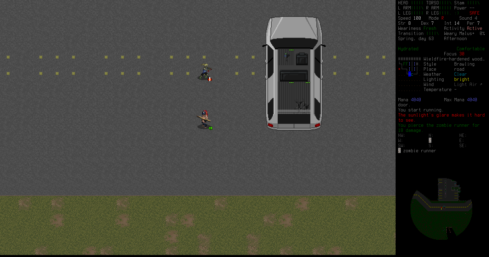
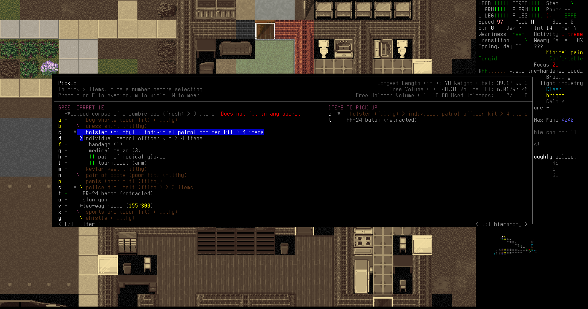
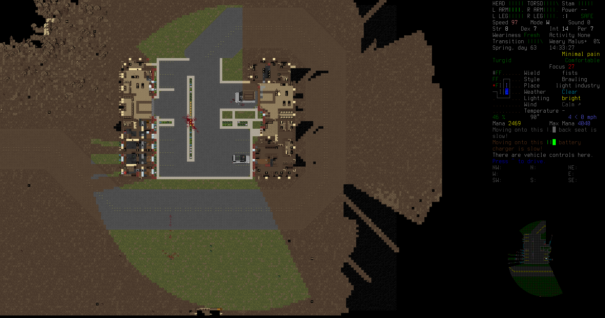

In the previous episode: Raymon camped out for a couple nights below a city, looting and fighting. After looting and fighting for a while, and discovering there was no way around the city from where he was, he hopped into his SUV and backtracked to try and find an off-road path back to a route toward the refugee center.
First leg
Sure enough, Raymon finds road just ahead, and it's leading east-west! This could be his ticket to the refugee center.
There's a light industrial compound built right next to the road, and it doesn't look very infested with the dead. A few zombies here and there, but what with Raymon's practice back at the city (which he still doesn't know the name of) Raymon feels up to the challenge of clearing this area in search of valuable tools and books.
This recently-risen body moves quickly, darting its head back and forth and gnawing at its hands.
Zombie runners are fast, but not as fast as Raymon when he runs. He kites them around, stabbing with his spear, and they only catch up once or twice to land a glancing scratch or two. Raymon's spear is more than a match for them.
There's vending machines in the lobby of the industrial complex, but Raymon doesn't have a cash card on him.
One of the most effective things Raymon can do to prepare for combat is drop his backpack. With that weight off his shoulders, his spear almost sings through the air as he impales zombies limb from limb.
This flyer Raymon remembers. It was one of many that made him aware of the new evacuation shelters, and probably saved his life when the world fell apart. He couldn't quite remember how he got there though...
One zombie had managed to get itself stuck in a fenced-off machinery area. Raymon pokes at it through the holes until it dies.
Another tactic Raymon uses is lighting a small brush fire and letting the zombies step into it and burn to death as he holds them back with his spear. He manages to kill half a dozen zombies this way, all in the same place.
One of the zombies is carrying a strange coin that Raymon's never seen before. Something seems magical about it__POST__mdash;the metal feels too smooth, too strong.
A cube van parked by the other half of the compound holds nearly six liters of gasoline. It's a little too bulky to be his main vehicle though. Raymon siphons the gas and fills up his own SUV.
It was only a child, and little is different about it now aside from the hungry look in its eyes. You'd be hard-pressed to not feel like you were killing an actual child by putting it down.
Killing that little zombie brings Rayon's mood down a ton. He can hardly think of anything else.
There's no time to mope, however. Juking a tough zombie with the cube van, Raymon blasts at it with magic missile until it dies. He's slowly improving, maybe in the future magic missile can become a primary weapon.
There's a ton of useful tools in the boxes and crates stored around the industrial compound. Raymon takes whatever he thinks he can use later; there'll be time to sort it out when he gets to safety.
One downside to using tactical fire is that it spreads. It's getting hot around there.
Hidden in a dark corner was a zombie in police gear. It's tough to kill, but Raymon brings it down with a final spear thrust through the chest. It's got some decent gear that Raymon can use. That holster could be useful if Raymon ever finds a gun big enough to fit it.

Having cleared this entire industrial compound, Raymon dumps his loot into the trunk of his SUV and hits the road again, heading west.
There's a huge irradiation plant tucked into the forest, but Raymon doesn't stay long. He does notice a van in really good condition parked just in front, so that he investigates.
Sure enough, it's in pristine condition. But, as before, it's a little too bulky to be his primary vehicle. Maybe in the future he'll want more space, so he makes a note of where it is on his map. He does, however, take the gasoline.
A little futher down the road is another evacuation shelter. This one is empty too, it seems nobody found shelter here.
In one of the bathrooms in the basement Raymon finds a smudged magic scroll. Well, that might be useful later.
Raymon switches on his SUV's stereo and finds that it's loaded with all kinds of music. His mood improves dramatically as he drives 45 mph down the road blasting some songs with open windows.
There's a fork in the road just past the evacuation shelter. Raymon decides to head north first, to try and get closer to the refugee center. He wishes he had binoculars: it'd make scouting much easier.
Raymon takes a breath at a public pond. Just him and the water. And, of course, the corpses of the mutant bullfrogs and zombies he had to kill to get here.
Further north, there's a roadside gas station, with plenty of gas in the pumps. Raymon tops off his SUV. If only his second gas tank wasn't cracked, he could fill all the way.

Some crates were airdropped nearby, but there wasn't anything spectacular inside, just a MRE and a first aid kit.
A small town comes into view. Raymon decides to go in and loot, he's feeling confident.
Fitting that he'd kill a firefighter zombie with fire. Fire is just so powerful.
In one of the houses Raymon finds a mp3 player. This will be a huge morale boost; he can listen to his favorite music while killing zombies.
There's a beautiful sports car in one of the garages. Raymon siphons out the gas.
A formless slime mold the size of a cow. Crusty bits of cytoplasm fall away as it oozes across the ground.
Van life
After looting the light industry compound and now this town, Raymon's SUV is full to bursting. The damage quarter of the trunk doesn't help either. Raymon decides to drive back to the irradiation plant and steal the pristine van instead. It might be bulky, but in the future it could become a decent mobile home or be useful to carry people or property back and forth.
Raymon smashes down the chain link fence and drives the van out, then transferrs all the fuel, supplies, and spare car batteries from his SUV.
It's beautiful, and in such good condition it can take a lot of abuse before he'll need a new vehicle.
To complete his new van, Raymon reads a new manual he found, Under the Hood, and uses it to install a recharging station in the cab. This will charge his batteries far faster than the little charger he put in the SUV. Then he waves goodbye to his SUV and drives his new van up to the gas station, topping off both tanks. Beautiful.
While looting the little town of Henniker more, one of the wild-eyed feral humans charges him, throwing rocks. They hurt! Some magic missiles and a coup-de-grâce with his tough spear take down the crazed man.
That survivor's note is almost funny. Raymon remembers the rise in cult behavior before the end. Powerful cults, with thousands, even millions of members. There might have been something to them.
There's a SWAT truck stalled in the middle of the street. Zombies swarm it but can't get inside. Raymon looks for guns or tools inside, but doesn't find anything notable.
Returning to his van, Raymon finds two dogs chasing a groundhog. That's the most normal thing he's seen these past days.
There's a river blocking the way west toward the refugee center, so Raymon plans to head north and around instead.
The end
Raymon passes a pack of migos on the road. They try to pursue him, but his van is too fast.

In a little corner of swamp there's a shack. It's empty, but Raymon takes a stepladder and stows it in his van. Never know when that might be useful.
There's a massive farm across the river. Raymon drives slowly along the dirt roads looking for an outlet to get to the refugee center, but there isn't one. He's surrounded on all sides by forest.
This is definitely not true. Knowledge is power!

Raymon drives all around the area, looking for a way to get to the refugee center by van, but there just isn't any. Finally he parks at the edge of the farm and starts looking for a clear path through the forest; maybe he can chop down some trees?
The horrible owlbear is probably the result of genetic experimentation by some insane wizard. These creatures inhabit the tangled forest regions of every temperate clime, as well as subterranean labyrinths. They are ravenous eaters, aggressive hunters, and evil tempered at all times. They attack prey on sight and will fight to the death.
A huge owlbear comes barreling out of the forest. Raymon saw it earlier, but he didn't look long enough to see if it was chasing him, and now it's here. He's already beat up. This will be a fight for his life. He readies his spear and his hands glow with magic missile.
It's not enough. Raymon dies as the owlbear tears through him. He survived only a few days after the end of the world, and never made it to the refugee center. Perhaps someone else will find his van packed with gear, or perhaps it will rot away, unused. Who knows?
Analysis
Owlbears are deadly, but that death was avoidable. I shouldn't have gone away from the van with my torso health that low, but I was getting impatient at not being able to reach the refugee center. Once again, one mistake is deadly in Cataclysm: Dark Days Ahead. See you next time!